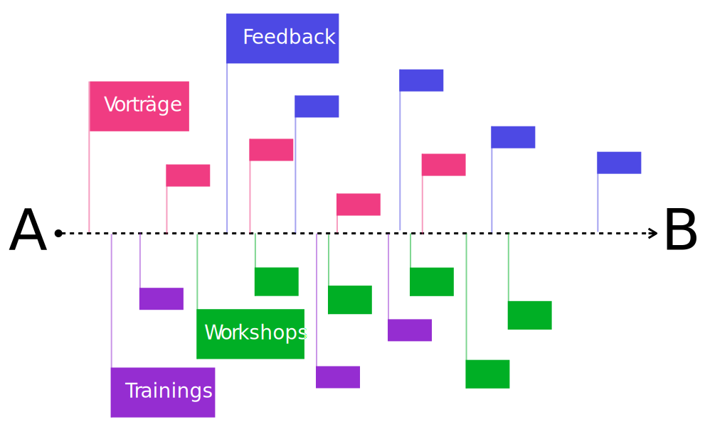

Über das Modul
Lesezeit: ~
7 mins

Hier finden Sie alle relevanten Informationen, Lernmaterialien, Ansprechpartner etc. zum Modul “Screendesign”. Die Screendesign Tage starten morgens um 9:00 Uhr mit einem kurzen Input, also vielleicht eher so mittelkurz, und dann haben in der Regel drei Slots mit Trainings oder Workshops, von denen Sie einen besuchen sollten. Mehr Informationen dazu finden Sie unter Veranstaltungsarten.
Die erste Veranstaltung ist am 10.10.2019 um 9:00 Uhr. Der letzte Termin ist am 30.01.2020.
Das Modul “Screendesign” ist für den Medieninformatik Bachelor im dritten Fachsemester verankert und baut auf das Modul “Mensch-Computer Interaktion” auf. Im Rahmen des Moduls sollen die Studierenden die Kompetenz erlangen, in interdisziplinären Teams die Design-Perspektive zu verstehen und einzunehmen. Sie sollen in die Lage versetzt werden, einen bestehenden Gestaltungskontext zu analysieren und zu erweitern. Darüber hinaus sollen die Studierenden eine gestalterische Grundkompetenz aufbauen.
Ok, jetzt mal etwas weniger didaktisch formuliert. Fangen wir vorne an. Wir sind Medieninformatiker und keine Designer. Als Medieninformatiker arbeiten wir jedoch oft in Teams mit Designern und anderen Disziplinen zusammen und können hier eine äußerst interessante Rolle übernehmen. Das beste, interessante, eigenständigste Designkonzept ist wenig wert, wenn es nicht umgesetzt wird oder gar werden kann. Mindestens an dieser Stelle können wir einen wertvollen Beitrag zum Erfolg eines Projektes leisten, wenn wir:
Mit dem Modul sollen die folgenden Lernziele erreicht werden:
Die Studierenden kennen wesentliche Begriffe der visuellen Kommunikation und können diese anwenden um Briefings, Angebote oder Korrekturwünsche im Design-Kontext zu verstehen oder zu verfassen.
Die Studierenden können Gestaltungslösungen und -kontexte analysieren, argumentieren, diskutieren, dokumentieren und bewerten, um eigene Lösungen innerhalb eines Gestaltungskontextes generieren zu können.
Die Studierenden können in einem gegebenen Gestaltungskontext, unter Berücksichtigung von Gestaltungsregeln (Raster, Layout, Typographie, etc.), eigene Gestaltungslösungen entwickeln, systematisch variieren und argumentieren um gegebene funktionale und/oder kommunikative Ziele zu adressieren.
In interdisziplinären Projektteams nehmen Medieninformatiker oftmals eine Schnittstellenrolle ein. Hier fühlt man sich zumeist sicherer und professioneller, wenn man diskursfähig ist. Jede Disziplin hat ihre eigene Fachsprache. Das ist im Design genauso. Wir können im Team besser agieren, wenn wir die Fachsprache verstehen und anwenden können. Wie groß ist der Durchschuss? Sollten wir die Headlines besser in Versalien setzen? Wie lang läuft die Copy? Und warum sind die BUs so klein? Welcher Schriftschnitt ist das? Mit dererlei Fragen und Aussagen sollten wir umgehen können.
Das Modul “Screendesign” teilt sich in zwei Teile. Wir werden uns im ersten Teil mit grundlegenden Fragen, Phänomenen und Herausforderungen im Design befassen und hierzu auch einige praktische Übungen und Workshops machen. Typische Fragen sind z.B.: wie gehen wir mit Schrift um, was sind sinnvolle Proportionen, wie entwickeln wir ein gemeinsames Zielbild, wie lassen sich Entwürfe angemessen visualisieren, etc.
Im Rahmen der zugehörigen Workshops werden einige Gestaltungsübungen gemacht. Die Ergebnisse müssen von den Studierenden in einem Gestaltungsportfolio gesammelt werden und zwei dieser Ergebnisse müssen im Rahmen der Portfoliopräsentation in einer 7 minütigen Präsentation vorgestellt und argumentiert werden.
Der zweite Teil wird in Projektform durchgeführt, d.h. ein Projekt bildet hier den roten Faden. Wir starten mit einem Ganztagsworkshop in das Projektthema. Damit die Teilnehmer das Projekt möglichst gut realisieren können, bieten wir eine Reihe von Veranstaltungen wie Workshops und Vorträge an. Diese können freiwillig und nach eigenem Ermessen besucht werden.
Um Feedback zu ihren Ideen und Entwürfen zu bekommen werden regelmäßige Termine angeboten. Von diesen Terminen müssen zwei wahrgenommen werden. Damit wir als Betreuer und Dozenten sehen können, dass die Studierenden auf dem richtigen Weg sind, gibt es zusätzlich zwei verpflichtende Zwischenpräsentationen. Wenn die Studierenden inhaltliche, gestalterische oder technische Unterstützung brauchen, können Sie die Supporttermine wahrnehmen. Zu allen Veranstaltungen, außer den Vorträgen, muss sich im Ilias angemeldet werden.
Das Projekt wird in Zweierteams durchgeführt.

Vorträge geben Überblick über ein Themengebiet, zeigen theoretische Grundlagen und jede Menge Beispiele, sind interaktiv und initiieren Diskurs, legen die Basis für die professionelle Auseinandersetzung mit dem Projekt, bauen das Vokabular für die Prüfung auf. Die Teilnahme wird dringend empfohlen. Eine Anmeldung ist nicht erforderlich.
Workshops bringen Theorie und Praxis zusammen, schulen und trainieren in einem bestimmten Themenfeld, erfordern den sicheren Umgang mit den trainierten Softwaretools, erfordern das Grundwissen aus den Vorträgen. Die Teilnahme wird dringend empfohlen. Zu Workshops muss sich im Ilias angemeldet werden. Wenn möglich, sollte hier ein eigener Rechner mitgebracht werden.
Der Ganztagsworkshop bildet den Einstieg in das Projekt. Hier legen wir die Basis für die spätere Projektarbeit. Dies ist ein Pflichttermin.
Trainings trainieren den Umgang mit Domänen-spezifischer Software, verbessern die Handlungsfähigkeit und -geschwindigkeit, müssen durch Screenmovies vorbereitet werden. Zu Trainings muss sich im Ilias angemeldet werden. Wenn möglich, sollte hier ein eigener Rechner mitgebracht werden.
Feedbacks & Support geben den Studierenden die Chance, Rückmeldung zu Ihrer Arbeit, dem aktuellen Stand und Ihrem Fortschritt zu bekommen; müssen von den Studierenden gut vorbereitet sein und eigenständig dokumentiert werden. Es müssen zwei Termine wahrgenommen werden. Es dürfen aber auch mehr Termine genutzt werden. Zu Feedback- und Supporttermine müssen Sie sich nicht anmelden.
Hier finden Sie eine Übersicht über alle angebotenen Veranstaltung im Rahmen des Moduls.
Die Prüfungsform ist eine Projektpräsentationsprüfung. Dabei präsentieren die Teams ihr Projekt in 20 Minuten. In der Prüfung sollten sie möglichst umfassend und professionell erläutern, wie sie im Projekt vorgegangen sind und warum welche Entscheidungen getroffen wurden. Zur Prüfung müssen sich die Studierenden im PSSO anmelden und einen Termin im buchen. Die Bewertung erfolgt mit Hilfe eines Niveaustufenmodells. Dies sollten sich die Studierenden unbedingt zur Projektlaufzeit und vor der Prüfung anschauen, um zu wissen, was erwartet wird und ihre Arbeit entsprechend auszurichten.
Neben dem eigentlichen Projekt muss ein Gestaltungsportfolio abgegeben werden, das die Arbeiten enthält, die im Rahmen der Übungen im ersten Teil der Veranstaltung erstellt wurden.
Eine Übersicht über alle prüfungsrelevanten Artefakte, deren Gewichtung und Bewertung finden Sie bei der Erläuterung des Niveaustufenmodells.
Die Prüfungen finden in den Tagen vom 25.03.2019 bis 28.03.2019 statt.
Anmeldezeitraum im PSSO vom 25.02.2019 bis 04.03.
Im Rahmen des Moduls werden wir in nahezu allen Workshops Layout und Prototyping Software benutzen. Dazu werden wir auch spezielle Trainings anbieten. Wir empfehlen die Nutzung Figma. Natürlich gibt es noch eine ganze Reihe an vergleichbaren Tools, wie Sketch, Framer, Affinity Designer, UX Pin, etc. Sie können gerne auch ein alternatives Softwarewerkzeug nutzen. In den Trainings gehen wir jedoch nur auf Figma ein.
Außerdem benötigen Sie einen einfachen Bildeditor, z.B. Gimp
Bitte bereiten Sie sich für die Workshops in einem der Tools vor:
Darüber hinaus gibt es bei Figma eine schöne Einleitung mit dem Namen Learn Design. Diese gibt eine gute Übersicht und einen guten Einstieg in das Thema Screendesign. Für diejenigen, die tiefer einsteigen möchten, anbei ein paar Leseempfehlungen:
Verantwortlicher Dozent des Moduls ist Prof. Christian Noss. Das komplette Betreuerteam besteht aus:
Volker Schaefer
Christian Noss
Christian Hahn
Janina Sperling